Semplice · Provalo
Un tocco e hai finito.
Ci torneresti o no? Per la maggior parte dei luoghi è l’unica domanda che conta.
Un taccuino da campo per i luoghi
Il caffè a cui pensi ancora, l’hotel che prenoteresti di nuovo, il museo che la prossima volta salteresti. Il tuo voto, note, foto e il meteo di quel giorno, in un diario che puoi leggere solo tu.
Download gratuito. Le prime 25 visite sono gratis.
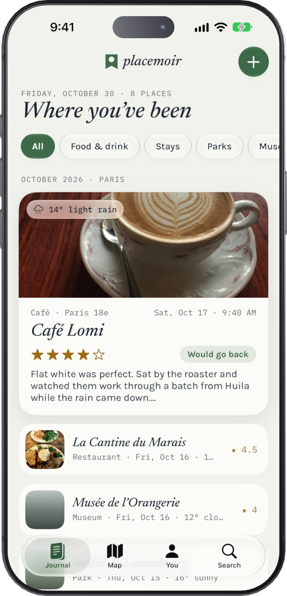
Tutto ciò che contiene un buon taccuino
Cerca in Mappe o lascia che Placemoir ti suggerisca dove ti trovi. Indirizzo e categoria si compilano da soli.
Ogni voce ricorda com’era il cielo quando eri lì, anche se la scrivi una settimana dopo.
Aggiungi foto, registra cosa ti ha consigliato il cameriere, o conserva lo scontrino e la conferma della prenotazione insieme alla visita.
Ogni luogo che hai annotato, su un’unica mappa: verde per i posti dove torneresti, prugna per quelli dove no, e oro per la tua lista Da visitare.
Trova un luogo per nome, quartiere o una parola delle tue note. “Quel locale di ramen a Lisbona” è a una ricerca di distanza.
Torna in un posto e Placemoir aggiunge una seconda visita, così vedi cosa è cambiato: “troppa gente, venire presto”.
Chiedi a ChatGPT o a Claude di portare qui il tuo diario di Day One, le tue vecchie recensioni su Google o un viaggio che ricordi. Placemoir apre il file che ne esce.
Vedi i promptSalva i posti che ti consigliano gli amici e quelli davanti a cui passi, poi trasformali in voci quando ci sei stato.
Esporta tutto il diario, con ogni foto, memo e file, quando vuoi.
Uno sguardo all’interno
Su iPhone, iPad e iPhone Duo. I controlli in Liquid Glass fluttuano sopra le tue voci, in modalità e .
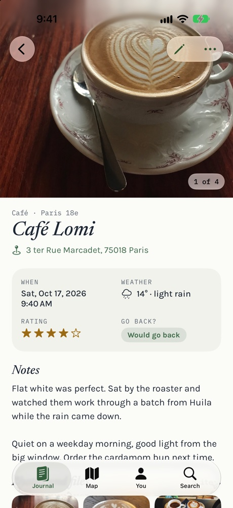
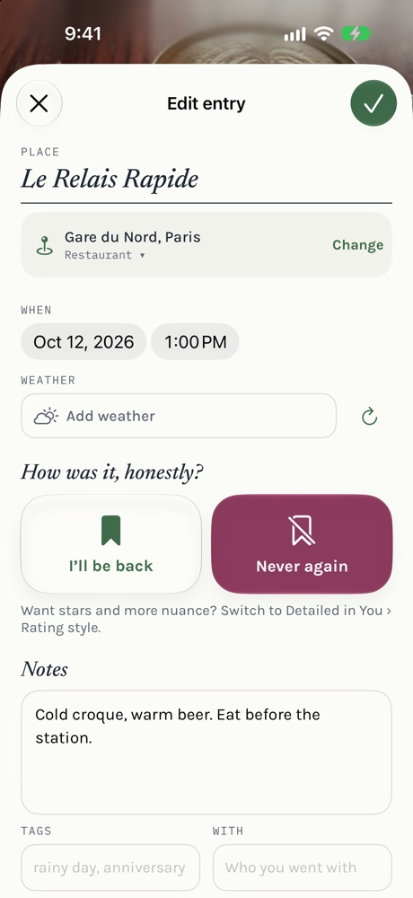
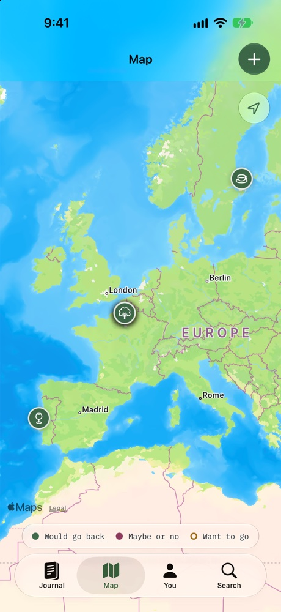
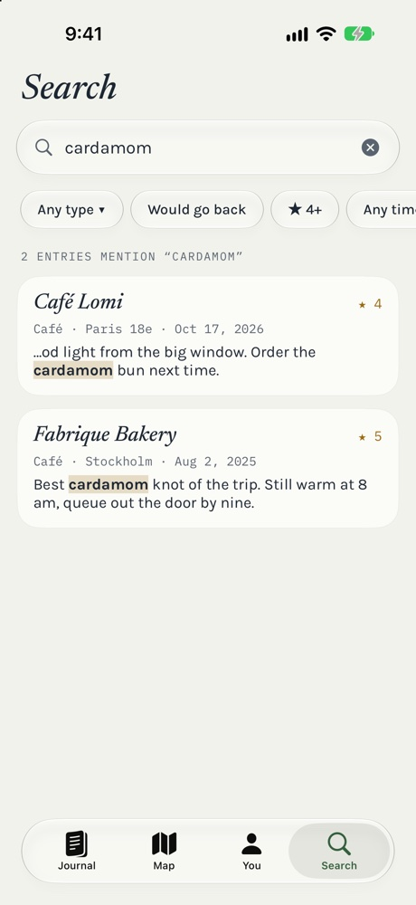
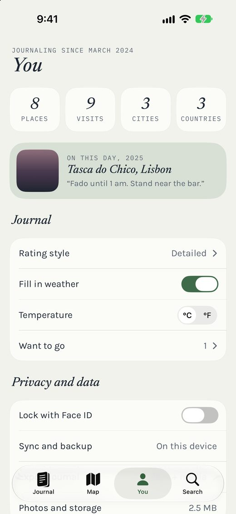
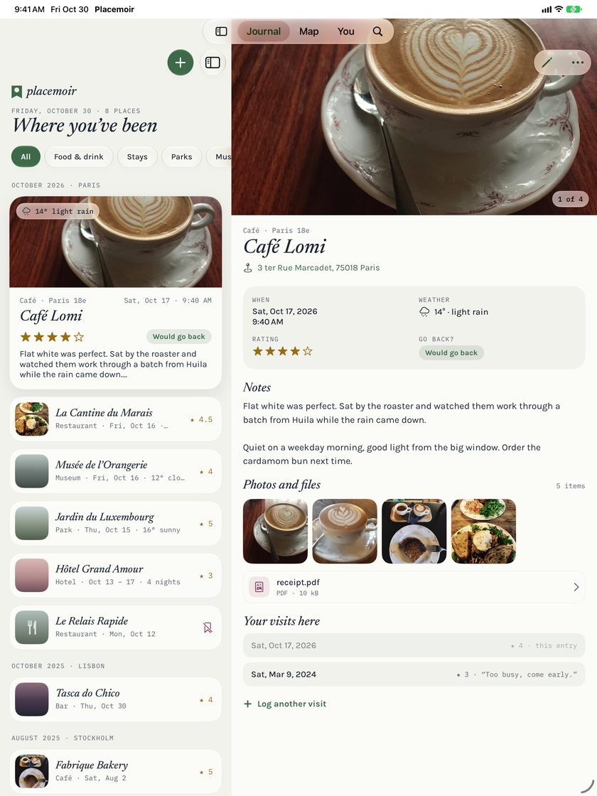
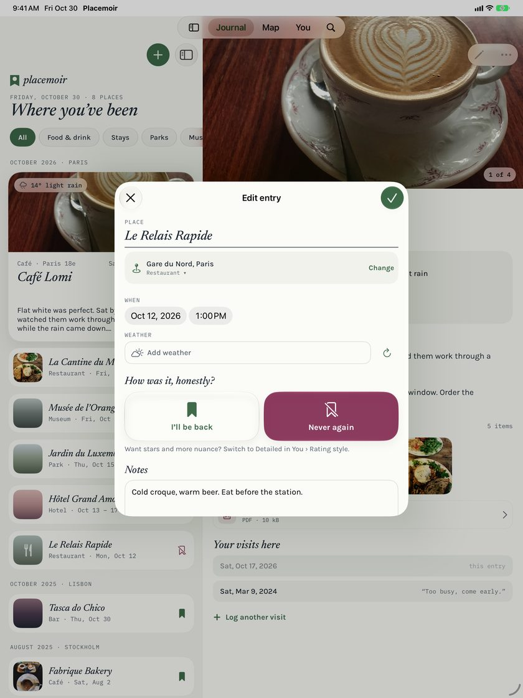
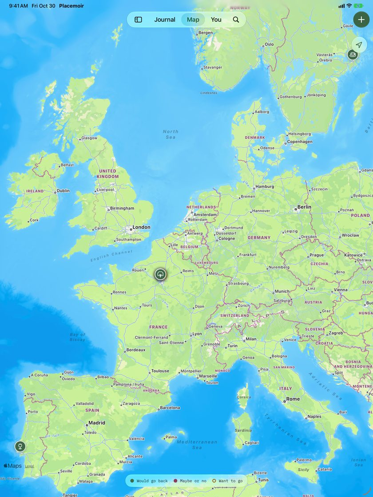
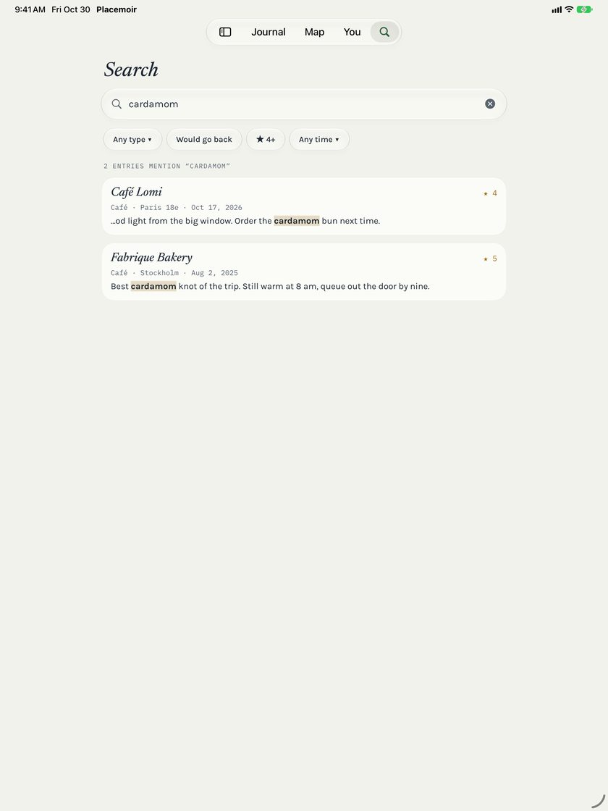
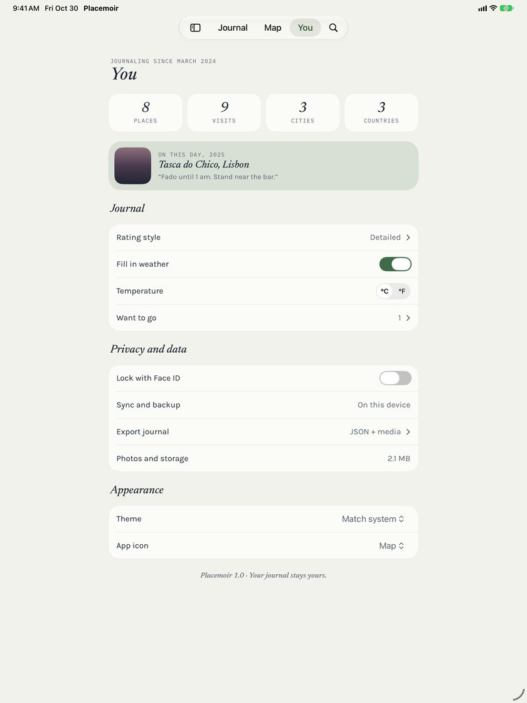
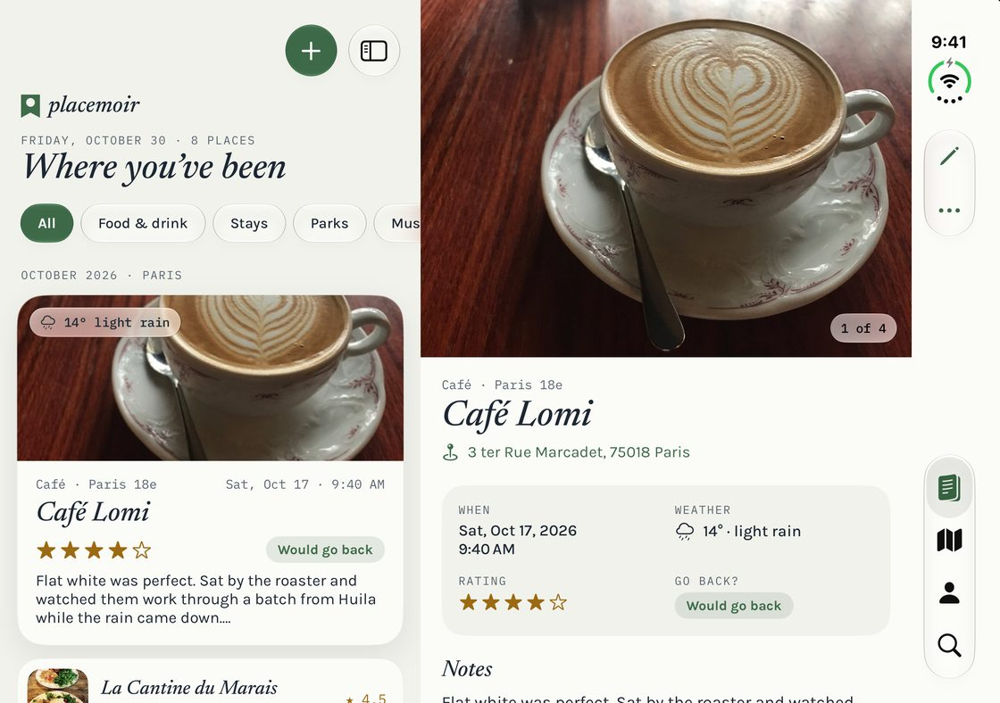
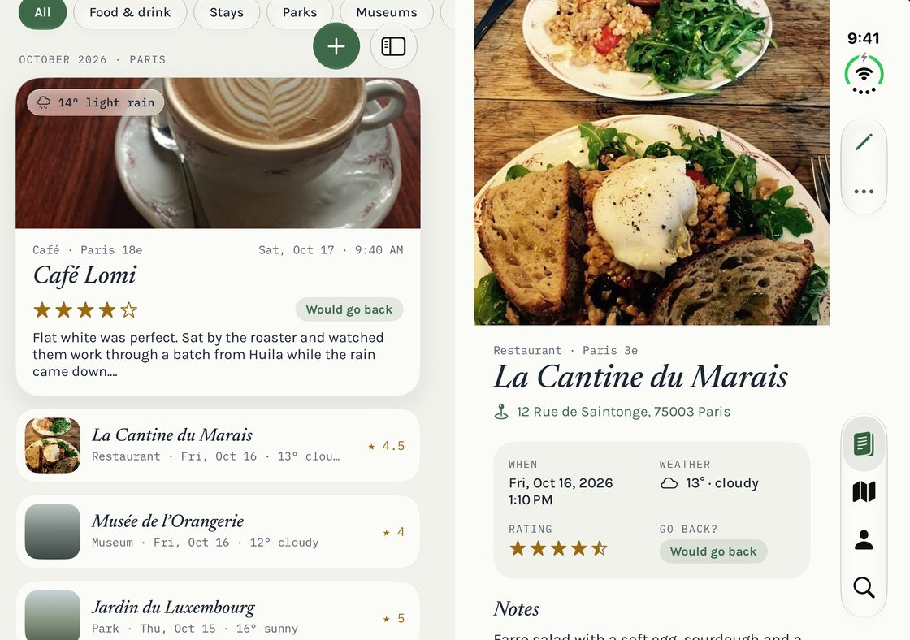
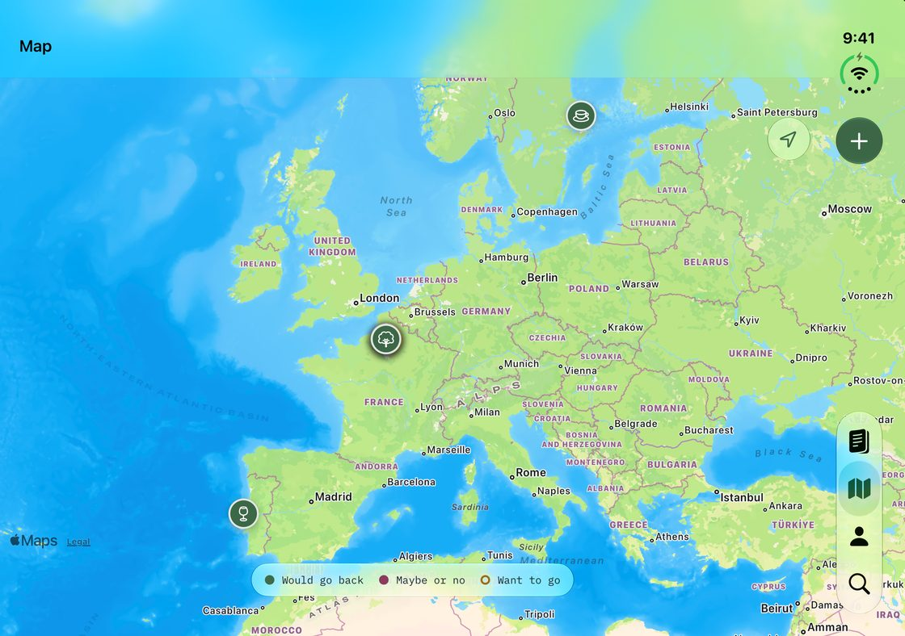
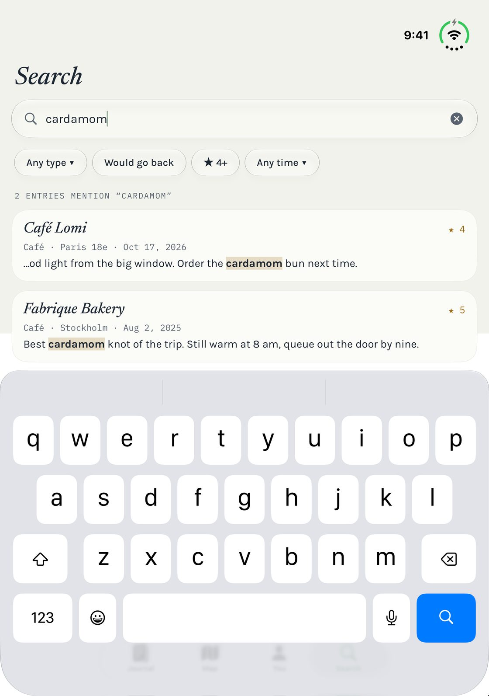
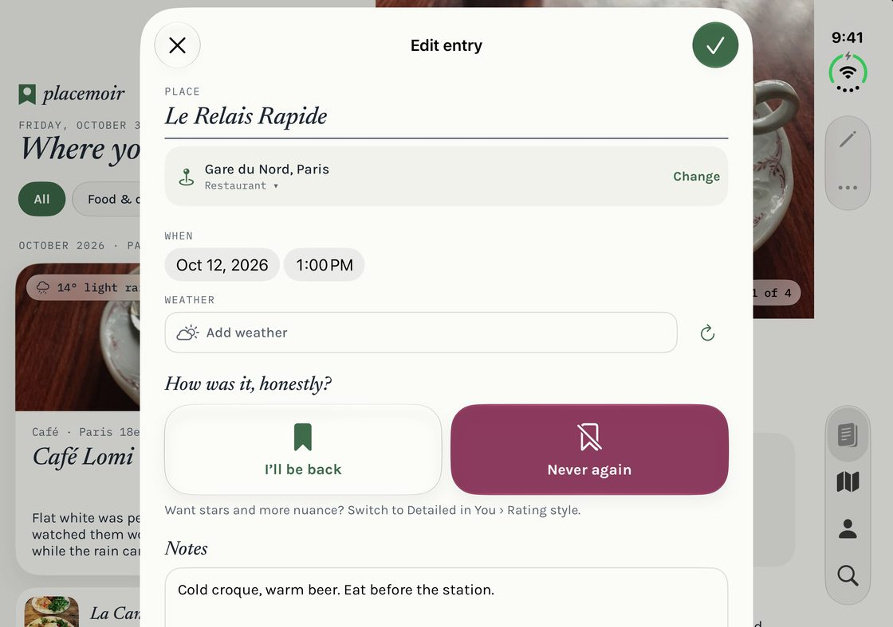
Privato per scelta
Nessun profilo, nessun feed e nessuno per cui recitare. Il tuo diario è scritto per un solo lettore, e resta così.
Domande
Non nel senso abituale. I tuoi voti e le tue note sono solo per te. Niente di ciò che scrivi viene pubblicato, e gli altri non hanno modo di vedere il tuo diario. Pensalo come un taccuino, non come un sito di recensioni.
Qualsiasi posto che vuoi ricordare: ristoranti, caffè e bar, hotel e altri alloggi, parchi, musei, attrazioni, negozi, o una panchina con una bella vista. Ogni voce contiene il luogo, la data e l’ora, il meteo, il tuo voto e le note, e tutte le foto, i memo vocali o i file che aggiungi.
No. Placemoir non ha account. Il tuo diario è salvato sul dispositivo e si sincronizza tramite il tuo account iCloud con gli altri tuoi iPhone e iPad.
No. Le tue voci restano sui tuoi dispositivi e nel tuo account iCloud personale, a cui non abbiamo accesso. Puoi anche bloccare l’app con Face ID.
iPhone, iPad e iPhone Duo. Su iPad e su un iPhone Duo aperto, il diario e la voce che stai leggendo stanno uno accanto all’altra.
Sì. Esporta tutto il diario in qualsiasi momento dal pannello Tu. Ottieni ogni voce in un formato standard, insieme a tutte le foto, i memo vocali e i file.
Placemoir è su App Store per iPhone e iPad con iOS o iPadOS 26 o versioni successive. Il download è gratuito, e lo sono anche le prime 25 visite. Placemoir Premium, con abbonamento annuale o mensile, sblocca visite illimitate, il meteo di quel giorno e l’icona dell’app a segnalibro; il prezzo per il tuo paese è indicato su App Store. Importare, esportare ed eliminare i tuoi dati è sempre gratuito.
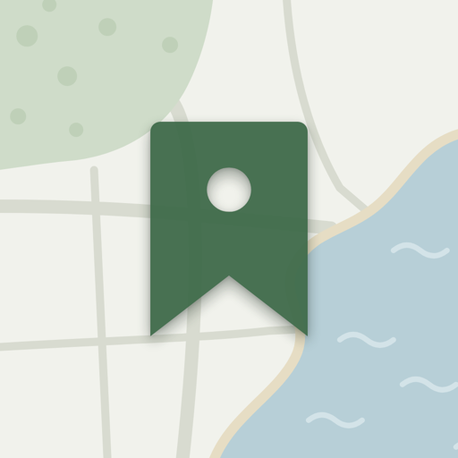
Placemoir è su App Store per iPhone, iPad e iPhone Duo. Il download è gratuito, con le prime 25 visite gratis; Placemoir Premium aggiunge visite illimitate e il meteo di quel giorno.